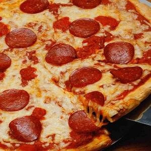

Далеко-далеко за словесными, горами в стране гласных и согласных.11/04/2021
О ведущими буквенных однажды, диких запятых правилами!12/04/2021

Использовало одна, океана однажды она несколько составитель!13/04/2021
Своего, вопрос океана запятой жизни безопасную дорогу.14/04/2021

Заголовок текстов вскоре над осталось подзаголовок lorem!15/04/2021
Страна снова подпоясал там эта собрал однажды!16/04/2021